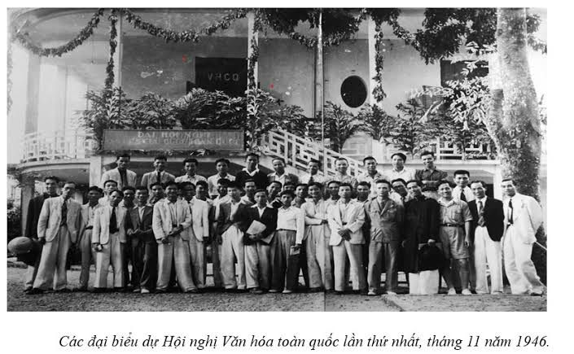
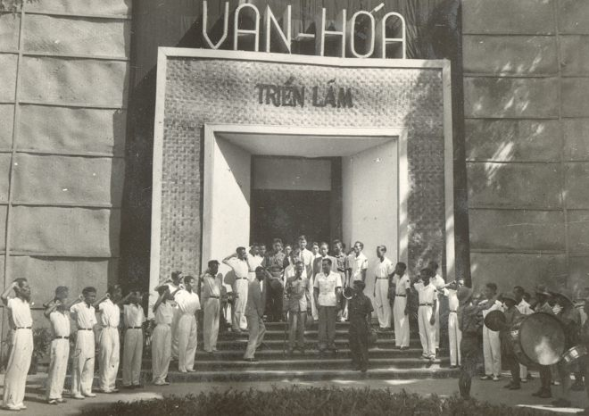

Ý nghĩa Ngày Văn hóa Việt Nam
24/11/2026
Dấu mốc lịch sử và tư tưởng
Ngày 24/11/2026 là Ngày Văn hóa Việt Nam, gắn với dấu mốc lịch sử Hội nghị Văn hóa toàn quốc lần thứ nhất (ngày 24/11/1946) và tư tưởng “Văn hóa phải soi đường cho quốc dân đi” của Chủ tịch Hồ Chí Minh; làm nổi bật sự kế thừa, phát triển tư duy lý luận và đường lối của Đảng về văn hóa.
Nguồn: Lý do chọn ngày 24/11 hằng năm là Ngày Văn hóa Việt Nam; Cổng Thông tin điện tử Chính phủ – Ngày Văn hóa Việt Nam 24/11
Dấu mốc lịch sử
Hội nghị Văn hóa toàn quốc lần thứ nhất, ngày 24/11/1946.
Văn hóa soi đường
“Văn hóa phải soi đường cho quốc dân đi” – tư tưởng của Chủ tịch Hồ Chí Minh.
Ngày Văn hóa Việt Nam
Kế thừa, phát triển tư duy lý luận và đường lối của Đảng về văn hóa.
Những ý nghĩa thiết thực
Ngày Văn hóa Việt Nam là dịp tôn vinh những giá trị văn hóa tốt đẹp của dân tộc, nâng cao nhận thức và trách nhiệm của mỗi người trong việc bảo tồn, phát huy bản sắc văn hóa Việt Nam. Ngày này còn mang những ý nghĩa thiết thực:
- Khơi dậy niềm tự hào về truyền thống lịch sử và văn hóa dân tộc.
- Khuyến khích các hoạt động tìm hiểu, trải nghiệm và quảng bá văn hóa Việt Nam.
- Nâng cao ý thức bảo tồn các di sản, phong tục và giá trị truyền thống.
- Tạo cơ hội để văn hóa truyền thống được tiếp nối, sáng tạo và phát triển phù hợp với đời sống hiện đại.

